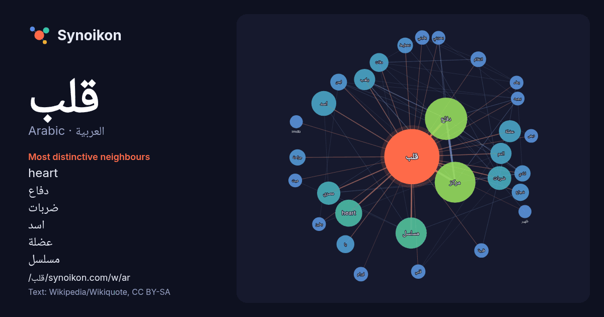

العربية · Arabic · popular word
قلب
“heart” · The words found around it in 1024 instances from Arabic Wikipedia, Wikiquote.

Most distinctive neighbours
- heart 39×
- دفاع 33×
- ضربات 27×
- اسد 26×
- عضلة 22×
- مسلسل 20×
- دقات 20×
- شجاع 16×
- مصري 14×
- انتظام 13×
- مركز 13×
- ايمن 13×
- لنادي 12×
- يا 12×
- بطيني 12×
- الدم 11×
- جراحة 11×
- بطء 11×
- قلبي 11×
- يلعب 11×
× = how many times more often than in general Arabic Wikipedia text.
Most frequent neighbours
- دفاع 96
- مركز 89
- مسلسل 52
- فيلم 40
- heart 39
- قدم 38
- اسد 33
- ضربات 30
- مدينة 30
- مصري 29
- عضلة 26
- كرة 25
- الدم 24
- لعب 24
- يلعب 24
- موقع 23
- ولد 22
- دقات 19
- يقع 18
- نادي 17
In context
- مخلفات عمليات الاستقلاب. يقع القلب عند البشر بين الرئتين، في الحجرة الوسطى للصدر، خلف القفص الصدري. نبض قلب إميلي صوت دقات قلب فتاة تبلغ من العمر 16 عامًا Wikipedia snippets · قلب
- قلب الوحش Heart of the Beast (الإنجليزية) تعديل - تعديل مصدري - تعديل ويكي بيانات قلب الوحش (الإنجليزية: Heart of the Beast) هو فلم حركة ومغامرات أمريكي Wikipedia snippets · قلب الوحش
- عضلِ القلب أو احتشاء العضلة القلبية (الإنجليزية: Myocardial Infarction MI أو Acute Myocardial Infarction AMI)، وتُعرف أيضًا باسم النوبة القلبية أو الجلطة Wikipedia snippets · نوبة قلبية
- نبضات قلب (التركية: Kalp Atışı) هو مسلسل تركي مقتبس عن الدراما الجنوب كورية الناجحة الأطباء لسنة 2016، عُرضت النسخة التركية ابتداء من 30 يونيو 2017 على Wikipedia snippets · نبضات قلب (مسلسل)
- الحريم في قصر الملك، ومعاناة والدته وذكرياتها عن أرض اجدادها البلوش. رواية «قلب من بنقلان» تم سحبها من الاسواق بامر من كاتبها، ولكنها ما زالت متوفرة عند Wikipedia snippets · قلب من بنقلان
- قلب الإسلام تعديل - تعديل مصدري - تعديل ويكي بيانات قلب الإسلام: القيم الدائمة للإنسانية هو كتاب صدر عام 2002 للفيلسوف الإيراني سيد حسين نصر. مُثُل الإسلام Wikipedia snippets · قلب الإسلام (كتاب)
- بعنوان قلب شجاع. إذا وصلت لهذه الصفحة عبر وصلة داخليّة، فضلا غيّر تلك الوصلة لتقود مباشرة إلى المقالة المعنيّة. مسلسل قلب شجاع: مسلسل تركي فيلم قلب شجاع Wikipedia snippets · قلب شجاع (توضيح)
- مَجْدِي يَعْقُوب، طبيب وجراح قلب مصري بريطاني، وأستاذ جامعي، اشتهر بإسهاماته في جراحة القلب وزراعة القلب وأبحاث أمراض القلب. وُلد في 16 نوفمبر 1935 في بلبيس Wikipedia snippets · مجدي يعقوب
More Arabic words
- أغنية
- إله
- تاريخ
- جبل
- جرس
- جزيرة
- جسر
- حديقة
- حصان
- حقيقة
- حياة
- خبز
- خريطة
- خريف
- ذهب
- زمن
- ساعة
- شاي
- شتاء
- صحة
- صحراء
- صمت
- صيف
- طبيعة
- طريق
- طعام
- ظل
- عائلة
- عاصفة
- عسل
- علم
- عمل
- غابة
- فن
- قطار
- قطة
- قوة
- كلب
- لغة
- ماء
- مال
- مدينة
- مرآة
- مطر
- ملح
- مناخ
- موت
- نجم
- والدة
Precomputed on 2026-10-09 with default settings (±5 words, medium corpus). The interactive map can refresh it with live data.